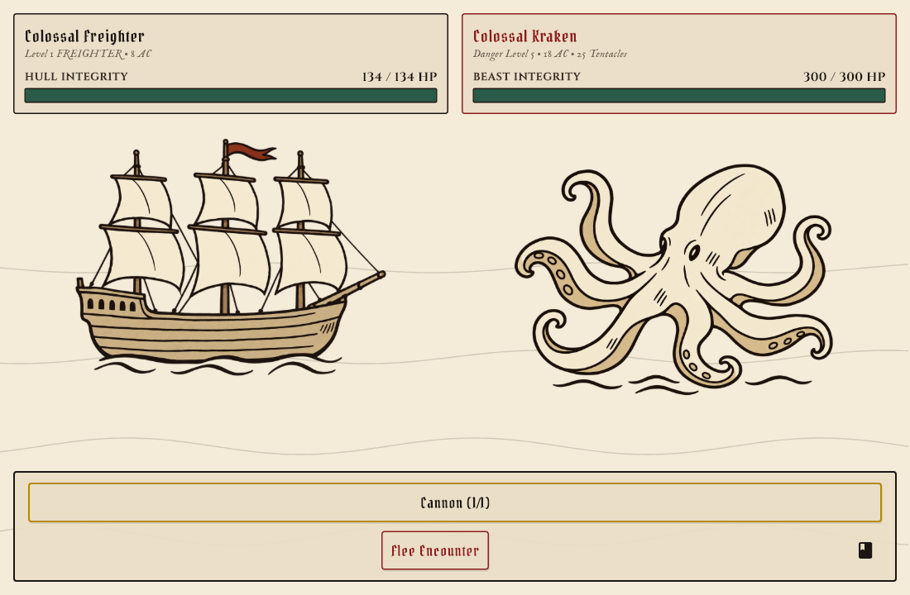
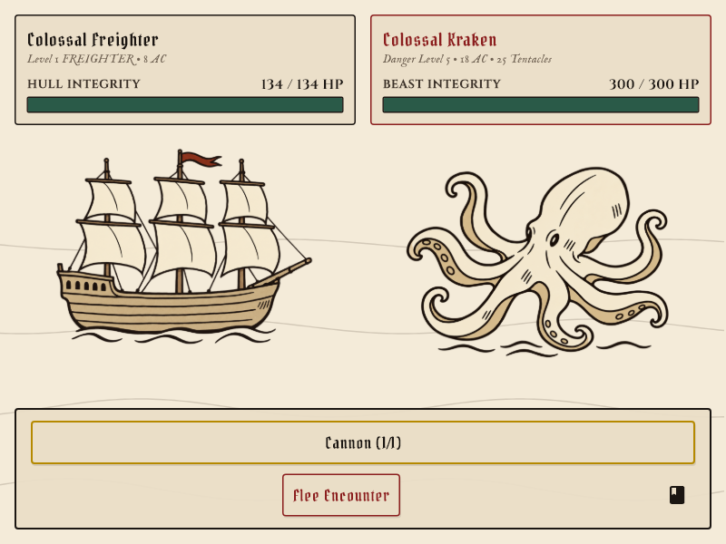

A simpler pair of parchment-map symbols: broad ink contours, quiet cream shapes, muted tan fills and a small number of useful interior marks.


Transparent PNGs generated with the built-in ImageGen tool. Exact prompts and asset paths · Earlier detailed pilot